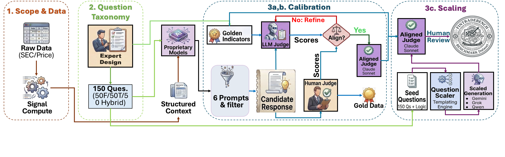
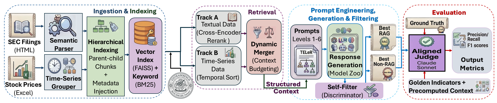
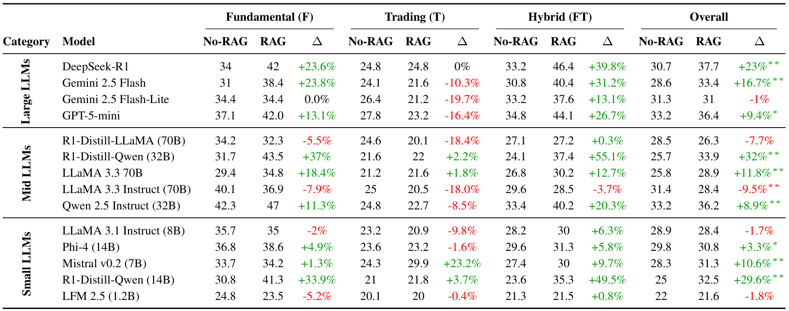
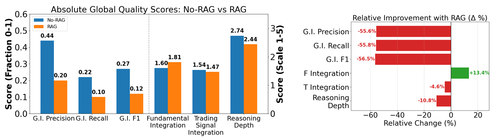

Real-world financial decision-making is a challenging problem that requires reasoning over heterogeneous signals, including company fundamentals derived from regulatory filings and trading signals computed from price dynamics. Recently, with advances in Large Language Models (LLMs), financial analysts have begun to use them for financial decision-making tasks. However, existing financial question-answering benchmarks for testing these models primarily focus on company balance sheet data and rarely evaluate reasoning about how company stocks trade in the market or their interactions with fundamentals. To leverage the strengths of both approaches, we introduce FinTradeBench, a benchmark for evaluating financial reasoning that integrates company fundamentals and trading signals. FinTradeBench contains 1,400 questions grounded in NASDAQ-100 companies over a ten-year historical window. The benchmark is organized into three reasoning categories: fundamentals-focused, trading-signal-focused, and hybrid questions requiring cross-signal reasoning. To ensure reliability at scale, we adopt a calibration-then-scaling framework that combines expert seed questions, multi-model response generation, intra-model self-filtering, numerical auditing, and human–LLM judge alignment. We evaluate 14 LLMs under zero-shot prompting and retrieval-augmented settings and witness a clear performance gap. Retrieval substantially improves reasoning over textual fundamentals, but provides limited benefit for trading-signal reasoning. These findings highlight fundamental challenges in numerical and time-series reasoning for current LLMs and motivate future research in financial intelligence.

Figure 2. The FinTradeBench design pipeline has three primary components: (1) Data & Design (Left): We aggregate regulatory filings (SEC 10-K / 10-Q) and daily OHLCV trading data for NASDAQ-100 companies over 2015–2025, aligned by ticker and quarter; (2) Question Taxonomy (Middle-left): F, T, and FT categories each annotated with Golden Indicators; (3) Calibration-then-Scaling (Middle-right & Right): expert-guided seed construction, evaluation & human–LLM judge alignment, followed by automated scaling.
FinTradeBench questions are organized into three reasoning categories that probe distinct competencies. Each question is paired with expert-defined Golden Indicators (G.I.) - the minimal set of financial variables required to support a correct answer.

Figure 3. Overview of our Retrieval-Augmented Generation (RAG) pipeline. A dual-track retrieval engine processes unstructured SEC text and structured time-series OHLCV chunks separately. The generation phase uses the TELeR taxonomy to produce multiple candidate responses across the model zoo, which are filtered via intra-model self-selection before evaluation.
| Statistic | Value |
|---|---|
| Total benchmark questions | 1,400 |
| Expert-authored seed questions | 150 (50 per category) |
| Companies covered | NASDAQ-100 |
| Time window | 2015–2025 (10 years) |
| Reasoning categories | F / T / FT |
| LLMs evaluated | 14 (proprietary & open-source) |
| Human–LLM judge alignment (MAE) | < 10% |
We benchmark 14 LLMs spanning Large (proprietary & open-source, >100B parameters), Mid, and Small tiers under both No-RAG and RAG settings. Evaluation uses a calibrated LLM-as-a-judge (Claude Sonnet 4.5) aligned with expert human ratings.
(1) RAG strongly benefits fundamental reasoning (F) and degrades trading-signal reasoning (T). R1-Distill-Qwen (32B) improves +37% on F-type questions, Gemini 2.5 Flash gains +23.8%, and DeepSeek-R1 gains +23.6%. In contrast, Gemini 2.5 Flash-Lite, GPT-5-mini, and LLaMA 3.3 Instruct (70B) drop 16–20% on T-type questions even when the temporal retrieval track surfaces relevant price chunks — models fail to compute indicators from raw numerical tables.

Table. Overall and category-specific normalized correctness (%) across 14 LLMs under No-RAG vs. RAG. Δ = (RAG − No-RAG) / No-RAG × 100%. Significance assessed via paired t-test (p < 0.05, p < 0.01).
(2) Hybrid (FT) questions impose the highest cognitive load. DeepSeek-R1 achieved the highest Hybrid RAG accuracy at 46.4% (+39.8% over its No-RAG baseline). The capability transfers to distilled open-weight models: R1-Distill-Qwen (32B) +55.1% and R1-Distill-Qwen (14B) +49.5% on FT questions. Latent chain-of-thought reasoning is the differentiator — not parameter count.

Figure 4. Global generative quality metrics. Left: Absolute scores comparing No-RAG and RAG outputs. Right: Relative change (%) across metrics when using RAG — Fundamental Integration improves +13.4%, but G.I. F1 collapses by 56.5% and Reasoning Depth drops 10.8%.
(3) Despite grounding answers in fundamental texts, the precise reasoning over Golden Indicators decreases with RAG. This shows that dense financial context improves surface-level factual grounding but actively suppresses the abstract analytical reasoning that expert evaluation requires. Models absorb retrieved documents and produce fluent, citation-heavy summaries, yet fail to isolate the specific signals an expert would prioritize. Injecting rich evidence while preserving an LLM's analytical depth remains the central challenge in financial RAG.
We qualitatively illustrate the distraction effect by comparing Gemini 2.5 Flash-Lite outputs on a Hybrid (FT) query about Apple Inc. (AAPL) under three retrieval conditions: No-RAG, Standard RAG, and an Ideal RAG with precomputed context.
This confirms that the bottleneck is not model capability but context structure. When numerical signals are pre-computed rather than raw, a mid-tier model can reason over them effectively.
We introduced FinTradeBench to evaluate financial reasoning across company fundamentals, trading signals, and hybrid queries on a decade of NASDAQ-100 data using a calibration-then-scaling framework. We benchmark 14 LLMs under No-RAG and RAG and observe several key patterns. RAG yields statistically significant improvements for fundamentals reasoning, where retrieved SEC filings activate strong prior knowledge, but degrades performance on trading-signal questions. Latent reasoning models such as DeepSeek-R1 and its distillations substantially outperform standard instruction-tuned models on hybrid questions, and model families exhibit very different sensitivities to context; Qwen models generally benefit from RAG while LLaMA models degrade overall, even at 70B parameters. In future work we plan to augment FinTradeBench, diversify the evaluation pipeline, and explore agentic RAG.
For full details, please refer to the main paper. Thank you!
@article{agrawal2026fintradebench,
title = {Fintradebench: A financial reasoning benchmark for llms},
author = {Agrawal, Yogesh and Dutta, Aniruddha and Hasan, Md Mahadi and Karmaker, Santu and Dutta, Aritra},
journal = {arXiv preprint arXiv:2603.19225},
year = {2026}
}
Media Coverage & Social
Coverage, threads, and posts where FinTradeBench has been discussed.
Press & Long-form Coverage
Video
X (Twitter)
LinkedIn
Indexing & Bibliographic
AlphaXiv DBLP RePEc / IDEAS Harvard ADS ResearchGate CatalyzeX SciRate GPTGet Scribd
Spotted another mention? Please open an issue on the repo and we'll add it.